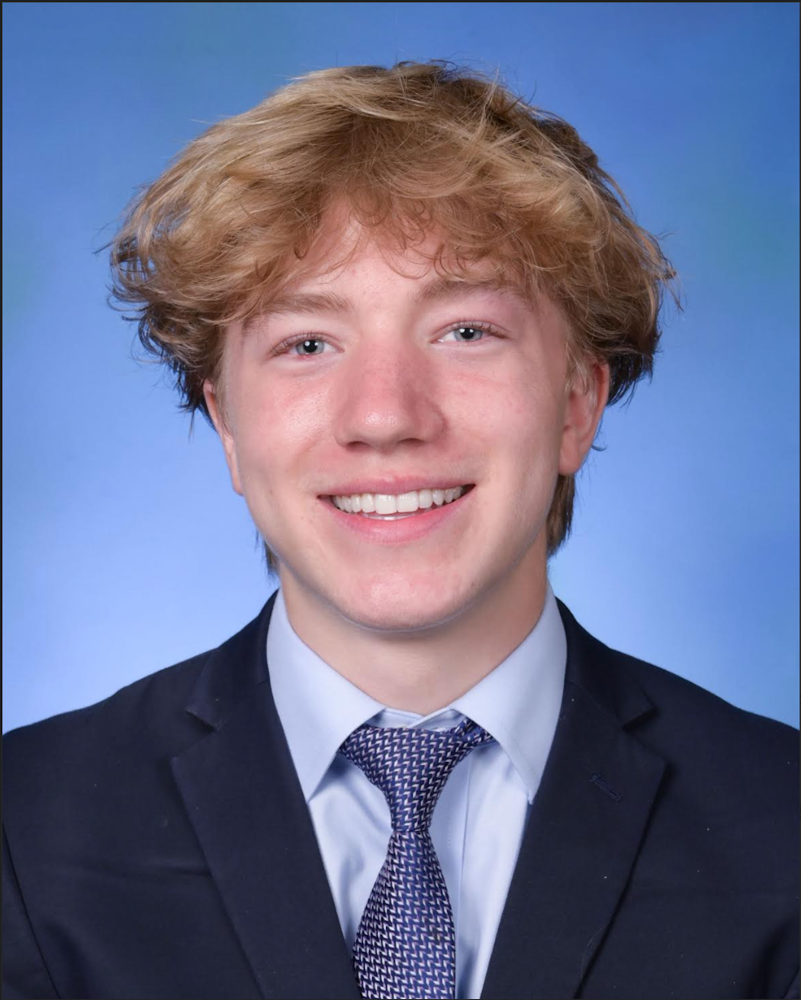
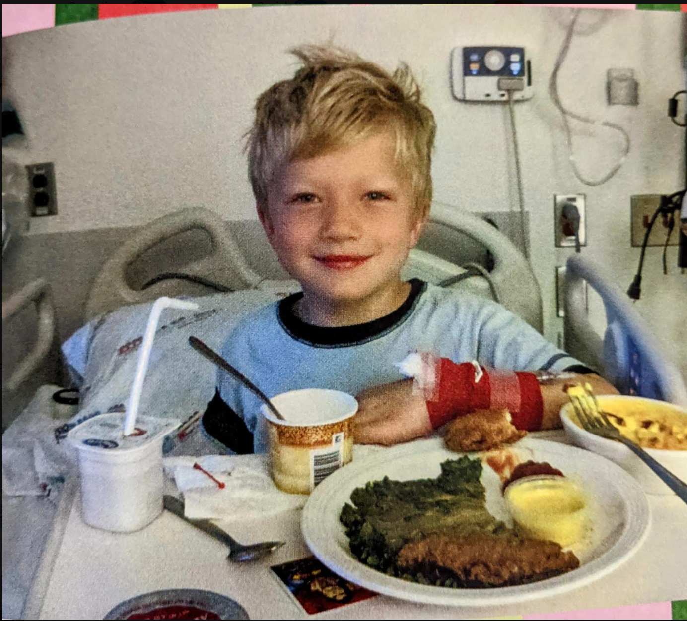

During my 5th birthday, I couldn’t eat my birthday cake. I had contracted the influenza virus a few days earlier and was still fighting the illness. After recovering a few days later, I began experiencing abnormal symptoms such as weak hands and constant tripping, and as symptoms persisted, it was apparent something was wrong. After visiting many physicians, I was diagnosed with the chronic form of Guillain-Barré Syndrome: a rare neurological disorder where antibodies, presumably from the flu I previously had, begin to destroy the myelin sheath surrounding peripheral nerves. The demyelinating effects begin in the hands and feet, gradually working their way towards the trunk, causing some patients to need mechanical ventilation or even wheelchairs.
Immediately after diagnosis, I spent two weeks in the hospital receiving treatment while undergoing various testing. In the years following, my life was riddled with frequent hospital visits, physical therapy, and constant uncertainty. However, after a few years, physicians helped regulate my treatment methodology by planning strategically timed IVIG treatments to fight my illness. The minimally invasive nature of intravenous treatment therefore allowed me to continue living an ordinary childhood while receiving essential care, solely requiring monthly outpatient hospital treatment.

“The meaning of life is not simply to exist, to survive, but to move ahead, to go up, to achieve, to conquer.”
During the first 3 years of treatment, I was greatly weakened, limiting the activities I could participate in. Through this firsthand experience, I have learned the importance of considering how undergoing treatment affects a patient’s quality of life. Aligning with Schwarzenegger’s statement, I strive to discover neurological treatments that allow patients “not simply to exist,” but to thrive, experiencing all life has to offer without the hindrance of extreme side effects.
Through my studies at UNC Chapel Hill, I will continue to explore the vastness of neuroscience to pinpoint where to effectively direct my passion. Hence, guided by that directionality, I hope to join a research laboratory to learn how to properly investigate underlying causal relationships within neuroscience and eventually lead such investigation. Outside of medicine, I will continue to prioritize physical health. As such, I recently completed a half marathon and hope to complete the Mount Mitchell Ultramarathon next summer. Furthermore, I will continue to advocate for the essentiality of physical health, and encourage those around me to lead a more active lifestyle, as, through my studies, I have learned how beneficial physical activity can be for both the body and the mind.Moreover, in the summer of 2027, I plan to attend NOLS Wilderness Emergency Medical Technician training in Lander, Wyoming. During this training, I will gain the clinical experience necessary to transform knowledge into action through 200 hours of hands-on experience. After gaining Wilderness EMT Certification, I hope to work in the backcountry in areas where immediate care is otherwise impossible.
Ultimately, I hope to use my time at Chapel Hill to build a foundation for a career to discover, and later administer, neurological treatments that allow patients to not simply recover from their illness, but to thrive while doing so.